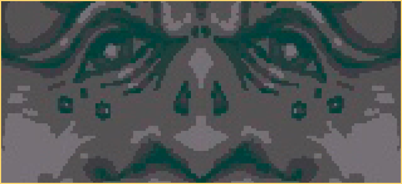

Black Tortoise
t is usually depicted as both a tortoise and a snake, specifically with the snake coiling around the tortoise. In Japan, it is one of the four guardian spirits that protect Kyoto and it is said that it protects the city on the north. Represented by the Kenkun Shrine, which is located on top of Mt Funaoka in Kyoto.The creature's name is identical to that of the important Taoist god Xuanwu, who is sometimes portrayed in the company of a turtle and a snake.